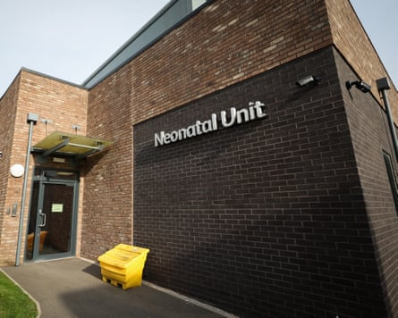
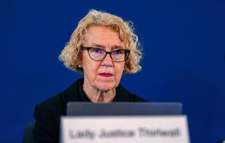

O n 4 February 2025, Lucy Letby’s barrister, Mark McDonald, convened a press conference at the grand baroque Westminster venue One Great George Street. It became a landmark moment, the culmination of months in which a number of distinguished experts had spoken out to question the former nurse’s convictions.
The media were addressed for an hour by a Canadian medical professor, Dr Shoo Lee. He said that a panel of international experts disputed the prosecution case that had led to Letby being found guilty in two trials of murdering seven babies at the Countess of Chester hospital in 2015 and 2016, and attempting to murder seven others. She was sentenced to 15 whole-life orders, and the court of appeal unanimously refused her permission to appeal.
“We did not find any murders,” Lee said. “In all cases, death or injury were due to natural causes or just bad medical care.”
Lee is one of the world’s leading neonatologists – doctors who specialise in the medical science and care of premature babies. Before his retirement from clinical practice in 2021, he held senior leadership positions in Canada, headed up international collaborations and conducted extensive research. His journey to becoming so involved in a criminal process pursued in the provinces of north-west England is a remarkable feature of the Letby case. It springs from Lee being told, after Letby was convicted, that a medical research paper he authored more than 30 years ago had been used as a basis for one of the prosecution’s central allegations – that Letby killed babies by injecting air into their veins.
Lee was dismayed, he told the Guardian, adding that the use of his paper was “incorrect” and a “categorical error”, and he was concerned Letby may have been wrongly convicted. He agreed to give evidence to the court of appeal but the judges dismissed it as “irrelevant” when they refused Letby’s application. He then committed to assembling a world-class panel who would fully assess the evidence. Lee’s eminence meant that the peers he could call on comprised leading specialists in Canada, the US, Japan and Europe, including two distinguished UK-based consultants, Dr Neena Modi , a pre-eminent neonatologist, and the renowned perinatal pathologist Dr Marta Cohen . Lee flew across the Atlantic at his own expense to present their findings at that bombshell press conference.
He explained the acute medical problems some of the premature babies had suffered, and said the panel found “no medical evidence to support malfeasance” or deliberate harm. But they had identified “so many problems” with the babies’ care, in a unit that had “inadequate numbers of appropriately trained” staff.
“If this had happened at a hospital in Canada,” Lee said bluntly, “it would have been shut down.”
T he neonatal unit at the Countess of Chester hospital was a small, cramped, concrete facility, built in 1971. NHS neonatal units are classified for staffing and expertise at three different levels, according to how premature the babies are, because the earlier they are born short of the 40-week full term of pregnancy, the more severe their physical underdevelopment and medical difficulties tend to be.
In 2015, the Chester unit was level two, which meant it accepted very premature babies, born after 27 weeks’ gestation, including those with high medical dependency needs and requiring intensive care.
The agonising series of premature babies dying on the unit began in June 2015 with three infants, anonymised at Letby’s trial as babies A, C and D. It was recognised as a crisis a year later when two of three premature triplets died, babies O and P. That prompted the hospital’s executives to downgrade the unit to level one, so it could only admit babies of more than 32 weeks gestation.
Central to understanding the Letby case is that across almost a decade of inquiries and investigations since then into the collapses and deaths of the babies on the unit, the criminal trials – the verdicts that the babies were deliberately harmed – are the exception. Before Cheshire police became involved in May 2017, there were extensive examinations and reviews: within the hospital by the neonatal clinical lead Dr Stephen Brearey, lead for children’s services Dr Ravi Jayaram, and others, postmortems by consultant pathologists at Liverpool’s Alder Hey children’s hospital, a coroner’s inquest for Baby A, a review of the unit by the Royal College of Paediatrics and Child Health (RCPCH), then further reviews by the pathologists and independent consultant neonatologists. None found that the babies had been deliberately harmed. Now, after Letby’s trials, Lee’s international panel wholly disagrees with the prosecution case, as do many UK-based specialists, including consultant neonatologists Svilena Dimitrova and Neil Aiton, who are also providing expert reports on individual babies for McDonald.
I n 2015-16, the Countess of Chester hospital’s neonatal unit was caring for more premature babies, with more acute medical needs, than in previous periods, and was struggling with staff shortages. But the precise causes of the individual collapses had not all been explained by the doctors or postmortems. Brearey and Jayaram had noted that Letby had been at work when babies collapsed, then in June 2016, after the two triplets died when she was on shift, they became more vocal about their suspicions. They had no evidence of any wrongdoing, nor of any deliberate harm caused to the babies.
Jayaram then discovered the 1989 article that Lee had authored with another doctor, Keith Tanswell. Jayaram later said that he and other doctors had begun to wonder about skin discolorations observed on three of the babies: A, whom he attended; B and M, who had had collapses and survived. Jayaram said he did some research, and came across “the possibility of something called an ‘air embolism’”. He then found “an old academic paper, written in the 1980s”.
‘The ordeal of the infants’ families is very sad. However, fair justice is paramount’ … David Davis and Dr Shoo Lee unveil their evidence at a press conference.Photograph: Andy Rain/EPA
Now that it has come to feature so prominently in the prosecution case, and Lee has appeared in person to respond so emphatically, the paper itself looks strangely modest: three and a bit pages of a medical journal, the authors’ full names not even given: SK Lee and AK Tanswell. Entitled “Pulmonary vascular air embolism in the newborn”, it was a study of babies’ fatal collapses caused by air in the bloodstream. Based on that paper, Letby would be accused of injecting air into babies’ veins, although the study also comprised babies undergoing high-pressure ventilation. In some, particularly the more premature, their lungs leaked, so air entered the bloodstream, then, when it travelled to the heart, it blocked the circulation.
The key observation that the prosecution’s medical experts would later cite as a guide to air embolism in the Chester babies is a single sentence, a description of skin colour changes.
“Blanching and migrating areas of cutaneous pallor were noted in several cases and, in one of our own cases we noted bright pink vessels against a generally cyanosed [blueish-grey] cutaneous background.”
Jayaram has said he found that description “chilling”, because it matched the blotches observed on the Chester babies, including Baby A. He began to raise air embolism, and the Lee and Tanswell paper, as possible evidence that Letby was murdering the babies by injecting them with air. He first mentioned it to hospital executives on 29 June 2016, then to the RCPCH review team, when they arrived two months later.
The RCPCH team did not find the accusations against Letby compelling. They found that the unit was not compliant with professional standards for level two, it had too few consultants who were doing only two ward rounds per week, and junior doctors were reluctant to call on them. The hospital’s medical director, Ian Harvey, commissioned Dr Jane Hawdon, a consultant neonatologist at London’s Royal Free hospital, to review the individual babies’ collapses, based on their medical records. Hawdon found no evidence of deliberate harm, but many instances of “sub-optimal care”. Harvey explicitly mentioned to Hawdon that the consultants had suggested air embolism. She replied that “there were insufficient details in records” and it would probably have been impossible “to record in anything but real time” the precise causes of some collapses, including if there were any “sinister” cause. But she emphasised she had “concerns” about the unit’s response to babies’ medical conditions, referring to “subtle signs” being missed “or not escalated or responded to”. There may have been “an inherent system or leadership problem,” she said.
Harvey also asked Dr Jo McPartland, one of the Alder Hey pathologists, to review the postmortems, and asked her about air embolism. McPartland replied in January 2017 regarding Baby A that “there was no evidence of air embolism”.
Brearey and Jayaram, in particular, did not accept the adequacy of the reviews. They maintained their accusations against Letby, and began to press hospital executives to involve the police. The executives were reluctant as there was no evidence against Letby, only the consultants’ suspicions due to the statistical coincidence of her having been on shift. Nobody ever saw her harm a baby or commit any of the acts – injecting babies with air, or lacing two feeding bags with insulin – of which she would later be accused and found guilty, and there has never been any tangible or forensic evidence of her doing so. She was well respected as a committed young nurse, who had taken intensive care qualifications, and would volunteer for extra work and overtime when the unit was stretched. Senior staff believed that this explained why she was often on shift for the sickest babies.
Eventually, the executives agreed to the consultants’ pressure to contact the police. Minutes of a meeting on 12 May 2017 show that the assistant chief constable, Darren Martland, did not believe there were grounds to investigate, as there was “no specific allegation at this point to suggest a criminal act”. He also pointed out that Cheshire constabulary “are not clinical experts”.
Martland said officers would, though, meet with Jayaram on 15 May 2017, as he had sent an email raising concerns. At that meeting, Jayaram told the police that “unusual rashes” were seen on some babies and he raised the possibility of air embolism. Three days later, on 18 May 2017, Cheshire police announced a criminal investigation. Paul Hughes, who became the senior investigating officer, was at the meeting with Jayaram.
In Jayaram’s first formal police statement on 18 September 2017, he referred to his research that found air embolism, and the Lee and Tanswell paper. He gave a very precise description of discoloration he said he had seen on Baby A, that tallied closely with the paper: “flitting patches of pink areas on the background of bluey-grey skin”.
Jayaram said in his statement that “this strange blotching”, which “didn’t fit with anything I’d ever seen before in my 27 years as a paediatrician”, also appeared on Babies B and M.
“The paper described what I had seen on the babies,” Jayaram said.
It would emerge at the trial, when he was challenged by Letby’s then barrister, Benjamin Myers KC, that Jayaram had never noted that skin discoloration on Baby A before. He did not include such a description in the medical notes he wrote on the evening Baby A died in June 2015, nor in his evidence to the coroner’s inquest. Myers accused Jayaram of making up this discoloration, two and a half years after Baby A died, to fit with the Lee and Tanswell description he had read since.
The neonatal unit at the Countess of Chester hospital where Lucy Letby worked.Photograph: Adam Vaughan/EPA
Jayaram replied that he had not realised its clinical significance at the time. “You’re suggesting I didn’t see it? No, absolutely I saw it, and I have no reason to confabulate why I might have seen it,” he said. “As a professional, as a paediatrician of 30 years, as a doctor of 32 years, if my character was such that I would make things up, I would hope that friends, colleagues, managers, nurses, patients, parents, would have picked that up well before now.”
Jayaram has also faced intense scrutiny and criticism for another key allegation he made against Letby, that he came upon her after she had dislodged Baby K’s breathing tube, in February 2016. However he did not mention that to anybody for months afterwards. This allegation led to a charge of attempted murder, for which the jury in the first trial could not agree a verdict. Letby was convicted in the retrial, whose jury was told she was by then a convicted serial killer. Asked why he waited so long to mention it, Jayaram has said he wasn’t courageous enough: “It’s been suggested to me that I just made that up, which is … I will refute, it is nonsense. There is no reason I would.”
Serious further criticism has been made recently of his evidence: he said at the Baby K retrial that when the baby deteriorated, Letby did not call for assistance . But in a May 2017 email only disclosed to Letby’s lawyers last September after she was convicted, recently reported by the UnHerd website, Jayaram wrote to his fellow doctors: “Staff nurse Letby at incubator and called Dr Jayaram to inform of low saturations.”
Last week, the Conservative MP David Davis, who has spoken in parliament arguing that Letby has suffered a “clear miscarriage of justice”, made a formal complaint to Cheshire police calling on them to investigate Jayaram for potential perjury.
Asked about his evidence by the Guardian, Jayaram declined to comment.
K ey to understanding how Cheshire police came to construct a case against Letby, and the allegations of injection with air that no previous expert found, is that one doctor, Dewi Evans, had a very significant role. Hughes’s team took him on within weeks, after Evans read about the investigation being launched and put himself forward, emailing a contact at the National Crime Agency: “Sounds like my kind of case.”
Evans was a consultant paediatrician with experience of neonatology, at Singleton hospital, Swansea, who retired in 2009. After that, he worked prolifically giving medical opinions as an expert witness in the adversarial battlegrounds of the courts. Concerns have been raised about his objectivity: expert witnesses must restrict their evidence to an impartial analysis in their own particular specialism, not advocate for the side instructing them. But Evans has talked repeatedly about having “won” all his cases, except one. He explained this to the Guardian last year, arguing it is proof that he is impartial, as “partisan witnesses don’t last long”.
Evans began suggesting the injection of air as a possibility to Cheshire police from an early stage. He ultimately gave as his medical opinion, for the police and prosecution, that five babies, A, D, E, I and O, had been killed by air embolism due to the injection of air into their veins. He also referred to the Lee and Tanswell paper to support this opinion, in particular that it explained the skin discolorations seen on some of the babies.
Myers suggested to Evans at the trial that the police must have told him about suspicions of air embolism, putting that in his mind. Evans said that was “completely untrue”.
“The first person I know of to raise the issue of air embolus in this particular series of cases was me,” Evans said.
Evans’ reputation was seriously undermined by an extraordinary intervention in the middle of the trial. A senior court of appeal judge, Mr Justice Jackson, issued profound criticism of Evans’ integrity as an expert witness in a separate case, and took the step of emailing the Letby trial judge, Mr Justice Goss, to inform him.
Jackson was vitriolic in his ruling, writing that Evans made “no effort to provide a balanced opinion”, and his approach “amounts to a breach of proper professional conduct”. He appeared to have wanted a particular outcome in the case, Jackson said, and sought to achieve it by “working out an explanation”. Jackson said the report included “tendentious and partisan expressions of opinion that are outside Dr Evans’ professional competence and have no place in a reputable expert report”.
Myers argued throughout the Letby trial that Evans was not impartial, and had been doing what Jackson found in the other case: “coming up with ideas and theories” to support the prosecution case that Letby harmed the babies. Evans consistently denied that. Myers then applied for all of Evans’s evidence to be disregarded. Goss refused, ruling instead that the jury should be told about Jackson’s criticisms, and decide themselves how credible they found Evans’ medical opinions. During those exchanges, Evans said that the opinion Jackson criticised in the other case had only been a letter to a solicitor, that he had not expected to go before the court.
Myers also applied for the allegations of air embolism to be thrown out, for lacking evidence. Goss refused that application, too. He acknowledged that the prosecution’s expert radiologist and pathologist did not find any “diagnostic” medical evidence of air embolism. But he said that this crucial question – the medical opinions that air had been injected into the babies’ veins, based in part on the skin discolorations linked to the Lee and Tanswell paper – should also be left to the jury.
The other method of murder alleged by the prosecution, which Evans also provided as an opinion, was that Letby injected air into babies’ stomachs via the nasogastric feeding tubes connected to their noses. Many experts since the trial have dismissed and even ridiculed that as a means of harm; several clinicians told the Guardian last year that it was not practically feasible, and even if it was, the air would leak out or the baby would burp or vomit it up, or pass it as wind. When the Guardian put their criticisms to Evans, he said his opinion had been that injecting air or fluid into the stomach destabilised the babies, and “was not directly responsible for any of the deaths”. McDonald argues this is a change of opinion from the trial, when Evans said that excessive air in the stomach could cause a baby to stop breathing. The court of appeal judgment states “air via nasogastric tube” as the mechanism of murder for three babies, C, I and P. Evans has since changed his opinion on Baby C, saying he now firmly believes air embolism was the cause, and has sent a new report to Cheshire police. They have refused to provide it to McDonald.
Lady Justice Thirlwall, chair of the public inquiry, who said she could not ‘set about reviewing the convictions … the court of appeal has done that, with a very clear result. The convictions stand.’Photograph: Peter Byrne/Reuters
Replying to questions from the Guardian, Evans stood firmly by his opinions on air embolism. He has pointed out that he was cross-examined on them, supported by other doctors in the trial, and that his opinions were also considered by the court of appeal. Evans said he has been “in good standing” with the General Medical Council since the start of his career in 1971, and began giving evidence as an expert witness in 1988. He said he “flagged up” air embolism as a cause of several babies’ collapse in his preliminary, 2017 reports, and only read the Lee and Tanswell paper later.
“The allegation of ‘misusing and misinterpreting Prof Lee’s 1989 paper is erroneous,” he said. “I had reached a diagnosis of air embolus long before (re)discovering Lee and Tanswell’s publication.”
L ee was quite unaware of the Letby case until her lawyers contacted him in October 2023. He was immediately troubled to discover how his research had been used. To the court of appeal, Lee carefully explained air embolism, and emphasised that only the one skin colour change identified in his paper, pink blood vessels against a bluish background, was diagnostic. He said none of the rashes described as having been seen on the Chester babies conformed to that; they had many possible medical causes, including hypoxia, and he disputed Evans’ opinions.
But the judges, while recognising that Lee was an eminent neonatologist, dismissed his testimony as “irrelevant and inadmissible”. It was irrelevant, they said, because the prosecution’s medical witnesses had pointed to the babies’ rashes as “consistent” with air embolism, not diagnostic of it. And Lee’s evidence was inadmissible because he had theoretically been available for the trial so Letby’s legal team should have called him then.
The judges also upheld Goss’s rulings that left the questions of air embolism, and Evans’s credibility, to the jury.
Lee told the Guardian: “Lucy’s lawyers told me that she had exhausted all avenues of appeal and would remain in jail for the rest of her life. That troubled me greatly because no one should be convicted based on wrong medical evidence.”
He then agreed to assemble his panel of “the best experts in the world” to examine the evidence. With a neonatologist colleague in Toronto, Dr Qi Zhou, Lee also researched air embolism specifically caused by injecting air into veins. Lee explains that his 1989 paper did not distinguish between cases where air entered the circulation from the high pressure ventilation, and those where air was injected into the veins. There was no research specifically into air embolism caused by air injected into the veins. “This was not pointed out at the trial or to the court of appeal,” Lee says. It was, he says, “a categorical error” to use his paper to allege air was injected into the babies’ veins.
In their new scientific paper published in December 2024 , Lee and Zhou found that no “patchy skin discoloration”, such as observed on the Chester babies, appeared from air injected into infants’ veins.
“This is new evidence,” he says.
I t was striking that when the trials ended in July last year, amid the storm of publicity, a growing number of experts immediately spoke out in disagreement, even outrage, at the evidence that led to Letby’s convictions. The government had rapidly set up a public inquiry, chaired by the court of appeal judge Lady Justice Thirlwall, to learn lessons from how a serial killer had apparently been operating in an NHS hospital unit. Before it started, 24 distinguished specialists wrote to the health secretary, Wes Streeting, and justice secretary, Shabana Mahmood, calling for the public inquiry to be paused or widened, to grasp the opportunity to consider whether the legal system may have produced a miscarriage of justice.
But Thirlwall and the inquiry lawyers refused to engage with that possibility. In her introductory speech, Thirlwall dismissed the mounting concerns as “noise”. She had to focus on the inquiry’s terms of reference and could not “set about reviewing the convictions”, she said. “The court of appeal has done that, with a very clear result. The convictions stand.”
For six months, until the hearings finished in March, the inquiry proceeded on that basis: an unchallengeable assumption that the prosecution case was right, and that the truth was only established once the police became involved.
The scale and weight of the expert challenge to the criminal trial have not been acknowledged by Thirlwall and her lawyers, by Streeting, Mahmood or any other government minister. The legal and political establishments appear to have struggled to recognise that the concerns over Letby’s convictions are far from conspiracy theory or internet noise. It is unprecedented that so large a group of experts with such distinguished reputations have so rapidly, publicly and comprehensively spoken out to dispute convictions for murder.
The lawyers representing the parents of the Chester babies at the Thirlwall inquiry have criticised the raising of concerns, and said they are increasing the families’ distress. They have dismissed the possibility that Letby could be the victim of a miscarriage of justice, and don’t accept that Lee’s panel’s work or his new research may undermine the safety of the convictions. On 18 March, Kate Blackwell KC, representing Harvey and three other hospital executives of the time, applied for Thirlwall to pause writing her report, arguing that the purpose of a public inquiry, to “fully and fearlessly” establish the truth, would otherwise not be fulfilled. Blackwell’s stance signalled that the executives, who have been relentlessly criticised at the inquiry for commissioning the external reviews and not going to the police sooner, question the safety of the convictions. It was the final day, and the first time anybody involved had said the experts’ concerns should be taken seriously. Streeting and Thirlwall refused the application.
On 3 April, McDonald submitted to the Criminal Cases Review Commission (CCRC) the full report, 698 pages, compiled by Lee’s panel, on all the babies. They found no evidence that any were deliberately harmed, and rejected the prosecution case of air embolism or air via the nasogastric tube. The panel set out detailed findings on the babies’ vulnerable medical conditions, their opinions on the cause of the collapses, and alleged a catalogue of poor medical practice by the doctors on the unit.
Seven other leading experts also produced a separate report for McDonald, which rejects key prosecution evidence that led to Letby being convicted of attempting to murder two babies by poisoning them with insulin.
“The convictions are unsafe and should be overturned as soon as possible,” Lee says. Of the parents, he says: “The ordeal of the infants’ families is very sad and unfortunate, and we all feel for them. However, fair justice is paramount.”
Some experts who also believe the convictions are unsafe are known to have taken issue with some medical detail in the panel’s findings, while agreeing with the conclusions that there is no evidence of deliberate harm to any of the babies.
The CCRC, founded after a 1993 royal commission report into a series of catastrophic miscarriages of justice including the Birmingham Six, is the legal system’s last chance for convicted people whose appeals have been turned down. It decides whether applications raise sufficiently serious questions about convictions for a case to be referred back to the court of appeal.
The CCRC has had its funding severely cut in recent years, while miscarriage of justice applications have dramatically increased, so the organisation is taking a long time to even consider them. The commission can only refer cases back to the court of appeal on the narrow ground that there is a realistic possibility the judges there may overturn a conviction. So it has to take into account judges’ reluctance to accept new expert opinion, however eminent.
Thirlwall continues to work on her report. She appears certain to recommend that, in future, if any accusations are made of wrongdoing by people in healthcare settings, they must immediately be referred to the police.
A spokesperson for the inquiry said: “It is not for a public inquiry to examine criminal convictions. That is the role of the Criminal Cases Review Commission and the court of appeal.”
A government spokesperson said: “We should all remember what the families and those affected by this appalling case are going through and keep them in our thoughts. A criminal trial has taken place and Lucy Letby was found guilty. There is an ongoing independent process to review cases through the Criminal Cases Review Commission.”
Meanwhile, Letby remains in prison, convicted as Britain’s worst ever child serial killer. She has always maintained her innocence.